Основное направление компании VILAVI
МИТО
Мы развиваем бизнес, делая жизнь и здоровье людей лучше с помощью комплексного воздействия на
организм и уникальных продуктов,
создаваемых совместно с ведущими экспертами
по митохондриальному здоровью.

создаваемых совместно с ведущими экспертами
по митохондриальному здоровью.